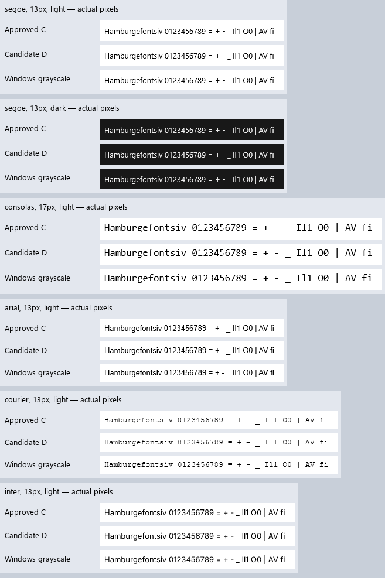

20 October 2026 · pure-D rendering · DirectWrite grayscale reference
C remains the approved default. The owner chose to keep C and continue improving D. D improves 134/144 comparisons, leaves 10 equal and regresses 0. Average native error falls from 12.862 to 11.689 (9.1%). Approved C pixels are unchanged. Exact native parity remains unachieved.
Start here: Live Pad++ at 125% DPI: C versus D · Implementation, failed experiments and limits · Validation record
Native scan conversion includes samples exactly on closing outline edges and rounds exact half-alpha ties down. D also recognizes the documented legacy TypeMan VacuFormRound function after IUP on both axes, while respecting the font's INSTCTRL opt-out. These fixes share the existing A8 atlas and software/Vulkan paths; there is no native rasterizer in Aurora.
The test-only override is AURORA_TEXT_EXPERIMENT=native-next, set before startup. Leave it unset for C.
The coverage policy, contrast default, layout, font metrics and existing ink guard are unchanged.
Rows are C, D, then this machine's Windows grayscale reference. Glyph IDs and origins match; this isolates rasterization from shaping.

Matched light/dark layouts use actual 96/144 DPI framebuffers. Pad++ at 150% is 1770×1140 pixels.
| Application | Theme | 100% | 150% |
|---|---|---|---|
| notepad | light | 96 DPI | 144 DPI |
| notepad | dark | 96 DPI | 144 DPI |
| host | light | 96 DPI | 144 DPI |
| host | dark | 96 DPI | 144 DPI |
| padpp | light | 96 DPI | 144 DPI |
Full validation status: passed for C and D. The record includes coverage/cache, 1,872 font cases per profile, instruction/scan-conversion unittests, DPI/window-DPI, 7,200 Windows glyph/size cases per profile with reverse replay, standards/Python checks, full host interactions and full Pad++ workflows.
GPU probes captured two changing, validated window states per profile. Differences below are against software over both states.
| Profile | DPI | Differing pixels | Max channel error | Rejected stale/obscured frames |
|---|
D's remaining software/Vulkan differences are at most one channel level. Rejected frames are excluded from accepted captures. Capture commands and results. The unrelated older Notepad drag/restore smoke failure remains documented.
| Font | px | Theme | C error | D error | Delta |
|---|---|---|---|---|---|
| segoe | 11 | light | 14.463 | 13.324 | -1.139 |
| segoe | 11 | dark | 11.262 | 10.049 | -1.213 |
| segoe | 12 | light | 12.155 | 11.580 | -0.575 |
| segoe | 12 | dark | 8.817 | 8.472 | -0.344 |
| segoe | 13 | light | 10.209 | 9.874 | -0.336 |
| segoe | 13 | dark | 6.911 | 6.504 | -0.407 |
| segoe | 17 | light | 10.161 | 9.660 | -0.500 |
| segoe | 17 | dark | 7.421 | 7.023 | -0.398 |
| segoe | 18 | light | 12.356 | 11.701 | -0.654 |
| segoe | 18 | dark | 9.117 | 8.519 | -0.598 |
| segoe | 20 | light | 10.228 | 9.526 | -0.702 |
| segoe | 20 | dark | 7.495 | 6.597 | -0.898 |
| segoe | 26 | light | 7.718 | 7.571 | -0.147 |
| segoe | 26 | dark | 5.100 | 5.022 | -0.078 |
| segoe | 34 | light | 6.031 | 5.868 | -0.163 |
| segoe | 34 | dark | 4.098 | 3.984 | -0.114 |
| consolas | 11 | light | 7.241 | 5.917 | -1.324 |
| consolas | 11 | dark | 4.232 | 2.742 | -1.490 |
| consolas | 12 | light | 7.323 | 6.580 | -0.743 |
| consolas | 12 | dark | 4.597 | 3.873 | -0.724 |
| consolas | 13 | light | 6.438 | 6.177 | -0.261 |
| consolas | 13 | dark | 3.462 | 3.210 | -0.252 |
| consolas | 17 | light | 17.372 | 16.426 | -0.947 |
| consolas | 17 | dark | 13.996 | 13.003 | -0.993 |
| consolas | 18 | light | 8.983 | 8.588 | -0.395 |
| consolas | 18 | dark | 6.003 | 5.745 | -0.258 |
| consolas | 20 | light | 4.565 | 4.310 | -0.255 |
| consolas | 20 | dark | 2.567 | 2.425 | -0.142 |
| consolas | 26 | light | 3.985 | 3.883 | -0.102 |
| consolas | 26 | dark | 2.130 | 2.111 | -0.019 |
| consolas | 34 | light | 5.120 | 4.503 | -0.617 |
| consolas | 34 | dark | 3.151 | 2.603 | -0.547 |
| arial | 11 | light | 23.941 | 22.504 | -1.438 |
| arial | 11 | dark | 20.661 | 19.239 | -1.422 |
| arial | 12 | light | 23.330 | 20.767 | -2.563 |
| arial | 12 | dark | 19.751 | 17.294 | -2.457 |
| arial | 13 | light | 27.121 | 24.671 | -2.450 |
| arial | 13 | dark | 22.796 | 20.683 | -2.113 |
| arial | 17 | light | 16.259 | 14.019 | -2.240 |
| arial | 17 | dark | 13.213 | 10.655 | -2.558 |
| arial | 18 | light | 7.279 | 7.202 | -0.078 |
| arial | 18 | dark | 4.381 | 4.381 | +0.000 |
| arial | 20 | light | 7.906 | 7.170 | -0.736 |
| arial | 20 | dark | 5.035 | 4.296 | -0.739 |
| arial | 26 | light | 6.193 | 5.726 | -0.467 |
| arial | 26 | dark | 4.330 | 4.090 | -0.240 |
| arial | 34 | light | 5.167 | 5.025 | -0.142 |
| arial | 34 | dark | 3.368 | 3.301 | -0.067 |
| calibri | 11 | light | 6.745 | 6.480 | -0.265 |
| calibri | 11 | dark | 3.362 | 3.303 | -0.058 |
| calibri | 12 | light | 7.562 | 7.236 | -0.325 |
| calibri | 12 | dark | 4.476 | 4.234 | -0.242 |
| calibri | 13 | light | 7.669 | 6.930 | -0.739 |
| calibri | 13 | dark | 4.661 | 4.082 | -0.579 |
| calibri | 17 | light | 7.039 | 6.388 | -0.652 |
| calibri | 17 | dark | 4.419 | 3.609 | -0.810 |
| calibri | 18 | light | 21.015 | 20.620 | -0.395 |
| calibri | 18 | dark | 16.911 | 16.554 | -0.356 |
| calibri | 20 | light | 8.966 | 8.210 | -0.756 |
| calibri | 20 | dark | 5.924 | 5.305 | -0.619 |
| calibri | 26 | light | 7.070 | 6.536 | -0.534 |
| calibri | 26 | dark | 4.795 | 4.152 | -0.643 |
| calibri | 34 | light | 5.664 | 5.601 | -0.064 |
| calibri | 34 | dark | 3.787 | 3.785 | -0.002 |
| tahoma | 11 | light | 26.506 | 24.293 | -2.213 |
| tahoma | 11 | dark | 21.231 | 19.524 | -1.707 |
| tahoma | 12 | light | 23.012 | 20.138 | -2.874 |
| tahoma | 12 | dark | 18.987 | 16.242 | -2.745 |
| tahoma | 13 | light | 23.205 | 20.838 | -2.367 |
| tahoma | 13 | dark | 19.155 | 16.838 | -2.317 |
| tahoma | 17 | light | 11.953 | 10.517 | -1.436 |
| tahoma | 17 | dark | 9.151 | 7.531 | -1.620 |
| tahoma | 18 | light | 6.029 | 5.806 | -0.222 |
| tahoma | 18 | dark | 3.213 | 3.112 | -0.100 |
| tahoma | 20 | light | 6.834 | 6.734 | -0.100 |
| tahoma | 20 | dark | 4.136 | 4.121 | -0.016 |
| tahoma | 26 | light | 5.196 | 4.684 | -0.513 |
| tahoma | 26 | dark | 3.322 | 2.944 | -0.378 |
| tahoma | 34 | light | 4.806 | 4.187 | -0.619 |
| tahoma | 34 | dark | 3.120 | 2.442 | -0.678 |
| verdana | 11 | light | 16.500 | 14.245 | -2.255 |
| verdana | 11 | dark | 14.166 | 11.954 | -2.212 |
| verdana | 12 | light | 20.813 | 18.309 | -2.504 |
| verdana | 12 | dark | 17.701 | 15.493 | -2.208 |
| verdana | 13 | light | 15.891 | 15.052 | -0.838 |
| verdana | 13 | dark | 12.914 | 12.141 | -0.773 |
| verdana | 17 | light | 11.276 | 9.639 | -1.637 |
| verdana | 17 | dark | 8.547 | 6.589 | -1.958 |
| verdana | 18 | light | 9.525 | 7.530 | -1.995 |
| verdana | 18 | dark | 7.074 | 5.017 | -2.058 |
| verdana | 20 | light | 11.393 | 8.969 | -2.423 |
| verdana | 20 | dark | 9.193 | 6.578 | -2.615 |
| verdana | 26 | light | 8.633 | 8.271 | -0.362 |
| verdana | 26 | dark | 6.432 | 6.030 | -0.402 |
| verdana | 34 | light | 5.323 | 4.834 | -0.490 |
| verdana | 34 | dark | 3.947 | 3.526 | -0.420 |
| courier | 11 | light | 34.171 | 33.036 | -1.135 |
| courier | 11 | dark | 31.157 | 29.593 | -1.563 |
| courier | 12 | light | 36.736 | 35.466 | -1.270 |
| courier | 12 | dark | 34.093 | 32.012 | -2.081 |
| courier | 13 | light | 31.221 | 30.133 | -1.089 |
| courier | 13 | dark | 28.668 | 27.146 | -1.522 |
| courier | 17 | light | 36.449 | 34.759 | -1.690 |
| courier | 17 | dark | 32.638 | 30.723 | -1.915 |
| courier | 18 | light | 30.885 | 30.386 | -0.499 |
| courier | 18 | dark | 27.304 | 26.413 | -0.891 |
| courier | 20 | light | 31.206 | 30.761 | -0.446 |
| courier | 20 | dark | 26.652 | 26.258 | -0.394 |
| courier | 26 | light | 29.186 | 28.088 | -1.098 |
| courier | 26 | dark | 24.521 | 23.587 | -0.933 |
| courier | 34 | light | 33.492 | 31.599 | -1.893 |
| courier | 34 | dark | 29.014 | 27.060 | -1.953 |
| times | 11 | light | 25.579 | 16.603 | -8.975 |
| times | 11 | dark | 20.325 | 12.811 | -7.514 |
| times | 12 | light | 23.988 | 14.929 | -9.059 |
| times | 12 | dark | 19.051 | 11.162 | -7.889 |
| times | 13 | light | 23.916 | 15.426 | -8.490 |
| times | 13 | dark | 19.717 | 12.061 | -7.656 |
| times | 17 | light | 16.890 | 15.758 | -1.133 |
| times | 17 | dark | 13.721 | 12.460 | -1.260 |
| times | 18 | light | 14.419 | 10.980 | -3.438 |
| times | 18 | dark | 10.643 | 8.374 | -2.269 |
| times | 20 | light | 7.177 | 6.700 | -0.477 |
| times | 20 | dark | 4.492 | 4.190 | -0.302 |
| times | 26 | light | 6.865 | 6.696 | -0.169 |
| times | 26 | dark | 4.240 | 4.207 | -0.033 |
| times | 34 | light | 5.754 | 5.674 | -0.080 |
| times | 34 | dark | 3.716 | 3.716 | +0.000 |
| inter | 11 | light | 6.698 | 6.578 | -0.120 |
| inter | 11 | dark | 3.581 | 3.581 | +0.000 |
| inter | 12 | light | 28.308 | 28.209 | -0.100 |
| inter | 12 | dark | 22.808 | 22.808 | +0.000 |
| inter | 13 | light | 17.624 | 17.534 | -0.090 |
| inter | 13 | dark | 13.341 | 13.341 | +0.000 |
| inter | 17 | light | 21.723 | 21.652 | -0.071 |
| inter | 17 | dark | 17.614 | 17.614 | +0.000 |
| inter | 18 | light | 10.986 | 10.893 | -0.093 |
| inter | 18 | dark | 7.939 | 7.939 | +0.000 |
| inter | 20 | light | 13.362 | 13.287 | -0.076 |
| inter | 20 | dark | 9.850 | 9.850 | +0.000 |
| inter | 26 | light | 5.075 | 5.010 | -0.065 |
| inter | 26 | dark | 3.358 | 3.358 | +0.000 |
| inter | 34 | light | 4.483 | 4.426 | -0.057 |
| inter | 34 | dark | 2.800 | 2.800 | +0.000 |
Measurements and source hashes · Concrete promotion proposal · Approved C review history